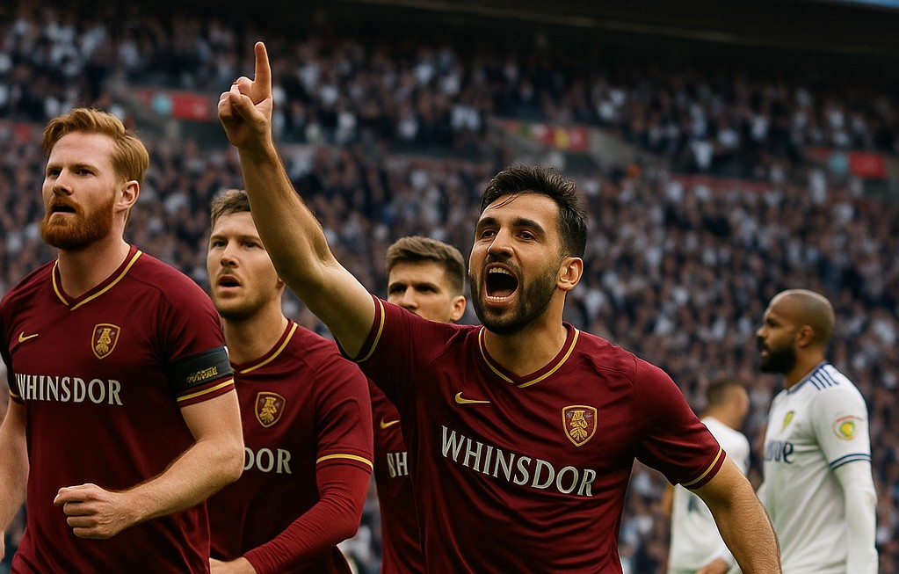
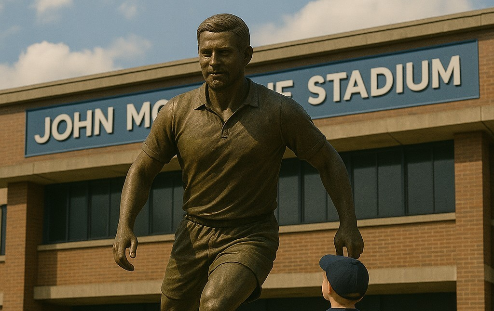

Nos arredores da histórica cidade de Winsdor, um pequeno grupo de quatro jovens estudantes se deparou por acaso com uma história esquecida: o Whinsdor Club, um dos clubes de futebol mais antigos do mundo, fundado em 1863, cuja existência tinha sido apagada pelo tempo. Através de documentos fragmentados encontrados durante uma pesquisa escolar, eles descobriram que o clube — outrora um símbolo de união e orgulho local — havia sucumbido à corrupção, falência e desordem interna no início do século XX. Esses jovens, fascinados pela história e movidos por um senso de justiça histórica, fizeram um pacto solene: devolver o Whinsdor Club ao futebol inglês e europeu, custasse o que custasse.
Nos arredores da histórica cidade de Windsor, um grupo de quatro jovens estudantes se deparou, por acaso, com uma história esquecida: o Whinsdor Club, um dos clubes de futebol mais antigos do mundo, fundado em 1863, cuja existência tinha sido apagada pelo tempo.

Caixas abandonadas no porão de uma antiga biblioteca municipal. Continham jornais amarelados, fotografias e fragmentos do antigo lema do clube: "In Concordia Stamus".

Maggie descobre arquivos antigos sobre o clube, revelando um passado glorioso e misterioso que inspira o grupo a investigar mais.

Desde seu retorno em 2023, o Whinsdor Club não apenas reviveu sua história, mas também surpreendeu o mundo do futebol com acessos consecutivos, chegando à Championship (segunda divisão inglesa) anos depois.

Entre os anos de 2020 e 2023, o Whinsdor Club saiu do anonimato absoluto para dar seus primeiros passos rumo à grandeza. Era um clube pequeno, distante dos holofotes e das páginas principais dos jornais, mas movido por uma ideia: construir algo duradouro e diferente no futebol inglês.

O renascimento do Whinsdor Club foi liderado por quatro jogadores que encarnaram o lema "In Concordia Stamus". Cada um deles teve um papel vital na impressionante jornada do clube, que subiu consecutivamente da quarta divisão à Championship (segunda divisão) em três anos.
 Sob o comando do técnico brasileiro Renato Madeira, o clube não apenas consolidou sua posição na Championship, como também surpreendeu o futebol inglês ao terminar em terceiro lugar, conquistando uma vaga nos playoffs de acesso à Premier League. A Temporada Brilhante O time, liderado em campo pelos experientes Angus MacLeod, Axel Bernier, Adnan Kaya e o jovem promissor Adam Manning, mostrou-se consistente do início ao fim. Renato Madeira conseguiu extrair o máximo de sua equipe, combinando disciplina tática com o espírito de luta que simboliza o lema (In Concordia Stamus). Momentos Decisivos: Angus MacLeod, o eterno capitão, foi o coração do time. Com sua liderança e passes milimétricos, foi responsável por 10 assistências e 5 gols durante a temporada. Na defesa, Axel Bernier se manteve como a rocha inabalável, comandando a linha defensiva com 3.5 desarmes e 2 interceptações por jogo, além de marcar dois gols decisivos em bolas paradas. Adam Manning cresceu ainda mais sob a orientação de Renato Madeira, tornando-se uma peça-chave no meio-campo defensivo. Ele brilhou em partidas cruciais, como na vitória por 3x1 contra o Sunderland, onde foi eleito o homem do jogo. Adnan Kaya, o maestro turco, esteve em sua melhor forma. Com 15 gols e 18 assistências, foi a alma criativa do time, incluindo dois gols nos playoffs contra o Middlesbrough que selaram a classificação para a final. Os Playoffs: Uma Jornada Inesquecível. Semi-final: Whinsdor Club x Middlesbrough (4x1 no agregado) Com a torcida lotando o John Montague Stadium, o Whinsdor começou a semifinal com intensidade. No jogo de ida, uma vitória por 3x0 foi marcada por um golaço de falta de MacLeod, um gol de cabeça de Bernier e um show de Adnan Kaya, que contribuiu com um gol e uma assistência. No jogo de volta, um empate por 1x1, com Manning sendo o destaque defensivo, confirmou a classificação para a grande final. O sonho estava mais vivo do que nunca. Final: Whinsdor Club x Leeds United (1x2) O palco da decisão era Wembley, e o Whinsdor Club chegou como azarão, mas com o coração cheio de esperança. Aos 38 minutos do primeiro tempo, Adnan Kaya, em um momento de pura magia, abriu o placar com um chute colocado de fora da área, levando a torcida ao delírio. Porém, o Leeds United, com sua experiência, empatou ainda no primeiro tempo e virou o jogo aos 72 minutos, após uma falha defensiva em uma bola aérea. Apesar de uma pressão intensa nos minutos finais, liderada por MacLeod e Kaya, o Whinsdor não conseguiu buscar o empate.')"> />O time, liderado em campo pelos experientes Angus MacLeod, Axel Bernier, Adnan Kaya e o jovem promissor Adam Manning, mostrou-se consistente do início ao fim. Renato Madeira conseguiu extrair o máximo de sua equipe, combinando disciplina tática com o espírito de luta que simboliza o lema "In Concordia Stamus".

Winsdor se fez uma cidade importante, notável no cenário do futebol. A chegada à Premier League se fez a realização de algo tão desejado e de extrema importância pra toda uma torcida.

A temporada 2025/26 marcou o início de uma nova era para o Whinsdor Club. Com a chegada de reforços cirúrgicos e o amadurecimento de talentos formados na Concordia, o time mostrou que já não era apenas uma promessa.

Os caminhos para o cenário internacional pareciam estar abertos para o sonhador e histórico clube da cidade de Winsdor

Altas expectativas geradas pelos grandes resultados recentes, além da grande evolução do time, trouxeram à tona um time ainda despreparado.
 Na Premier League, o clube ficou em 5º, confirmando regularidade na elite. Porém, foi na Europa League que o sonho quase se concretizou. A equipe foi eliminada nas semifinais com uma virada sofrida contra o Sevilla, após vencer por 3x1 na ida e perder por 4x0 na volta, na prorrogação. Destaques: Cassey e García passaram da marca de 60 gols juntos Daniel Foster se firmava como um dos melhores meias da Europa Adnan Kaya se despedia do futebol aos 35 anos, ovacionado pela torcida Foi uma temporada dolorosa, mas madura. A base permanecia sólida. As convicções, também.')">/>Mesmo com o passar dos anos, parecia que o time nunca estaria pronto para alçar voos maiores. Parecia sempre faltar algo, um detalhe, algo diferente, algo que Renato Madeira não era capaz de descobrir.

Tudo parecia ser um sonho! A torcida encantada, vibrando e tendo a temporada que realmente merecia. Finalmente vivendo dias de um COLOSSO europeu!

"A maior vitória do Whinsdor não foi uma taça. Foi provar que é possível ganhar com valores." — Angus MacLeod, em sua despedida no John Montague Stadium

Uma supremacia se instaurava nacionalmente, junto com incerteza no âmbito continental. A torcida continuará esperançosa?

Difícil de acreditar, mas, sim, nós somos campeões de TUDO, zeramos o futebol. Agora é nóis e poucas!

Apesar do sucesso na temporada, o "salto alto" foi o nosso maior inimigo. impedindo que alcançassemos a glória maior.

Entre despedidas de lendas, glórias tão sonhadas, a torcida do Whinsdor Club se fez feliz de um jeito como nunca foi...

"Caminhamos juntos, caímos juntos, vencemos juntos — porque em Concordia, nós somos um só." — Renato Madeira